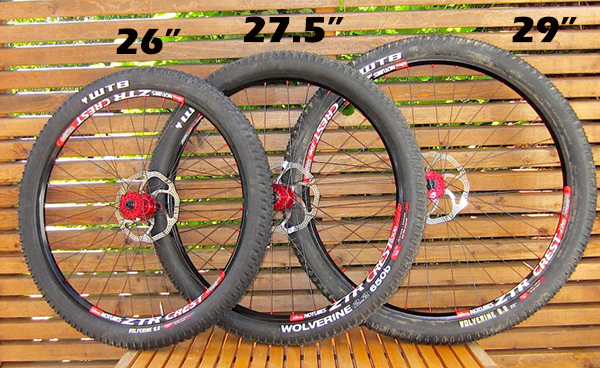

Extensive information on mountain bike history, types of bikes, and components.
Different types of terrain require different bikes to get the job done comfortably and efficiently. Flat, smooth trails can easily be traversed with a suspension-less bike, while steep, rocky trails require longer suspension and sturdier builds to absorb the hits. Geometries play a role in bike stability, handling, and comfort. Examining the environment and riding style is the first step in choosing a mountain bike.
There are effectively three types of suspensions in regards to mountain bikes:
Head angle geometries also come into play in determining the type of terrain the bike can handle. The head angle is defined as the angle between the fork and rear axle:
MTB Direct puts the advantages and disadvantages of smaller and larger head angles succinctly:
Pros [smaller head angle, 62° minimum]:
- The fork will be able to suck up bumps better at higher speeds
- Increased stability as the wheels are further apart
- Better high speed cornering
- Less of the "I'm going to go over the bars!" feeling
- Confidence inspiring to ride in steep terrain
Cons [smaller head angle, 62° minimum]:
- Steering is slower and less responsive
- Front wheel can "flop" from one side to the other on tight corners
- Worsened tight turning performance
- Not so nice to ride on flatter terrain
- Does not climb well and the front wheel tends to wander as there is less weight on it
Pros [larger head angle, 73° maximum]:
- Faster handling speed and better response
- Better cornering in tight terrain and a tighter turning radius
- Feels great on flatter terrain and "ducks and weaves" better
- Increased climbing performance
Cons [larger head angle, 73° maximum]:
- Feels unstable and "twitchy" at higher speeds
- Feels like you could get sent over the bars a lot easier
- Doesn't absorb bumps as well at high speeds (the fork is more perpendicular to the bump than it is with a slack angle)
- Tends to get "hung up" on bigger bumps more
There's a balance to be had, of course. Some bikes, such as the Ibis Ripley, offer moderate head angles to allow for both efficient climbing and fun descending.
Chainstay length is defined as the distance from the bottom bracket to the rear axle and provides differences in handling capabilities. From Bike Insight's article on chainstay length:
Qualities of shorter chainstays:
- Shift center-of-mass rearward rearward to balance a more aggressive rider position
- Reduce turning radius for quicker handling
- Stiffen frame
- Reduce likelihood of chain-on-tire rub
- Easier to lift the front wheel for manuals, wheelies, bunny hops
Qualities of longer chainstays:
- Shift center-of-mass frontward rearward to balance a more upright rider position
- More stable handling
- Increased compliance for a smoother-feeling ride
- Reduced vertical-displacement at the saddle over bumps
- Greater heel clearance for rear panniers
Some bikes come with adjustable dropouts, allowing the chainstays to be shortened at will.
Taylor Jones' Mountain Bike Wheels: What to Know provides an excellent overview of wheels.
Current wheel sizes (measured by diameter) are 26 in., 27.5 in., and 29 in. (and sometimes 28.125 in., as in the case of an April Fools' Day prank that I cannot find a source on).
As with the various geometries discussed in the Types section, each wheel poses distinct advantages and disadvantages.
26 in. advantages (A) and disadvantages (D):
29 in. advantages (A) and disadvantages (D):
27 in. advantages and disadvantages:
Spokes connect the hub and rim, providing support for the entire wheel. More spokes provide more support, but also more weight. For reference, this spoke adds 191 g (0.42 lb, 0.19 kg) to a 32-spoke wheel (which both my fixie and one of my mountain bikes are equipped with), a negligible amount unless you are a competitive rider.